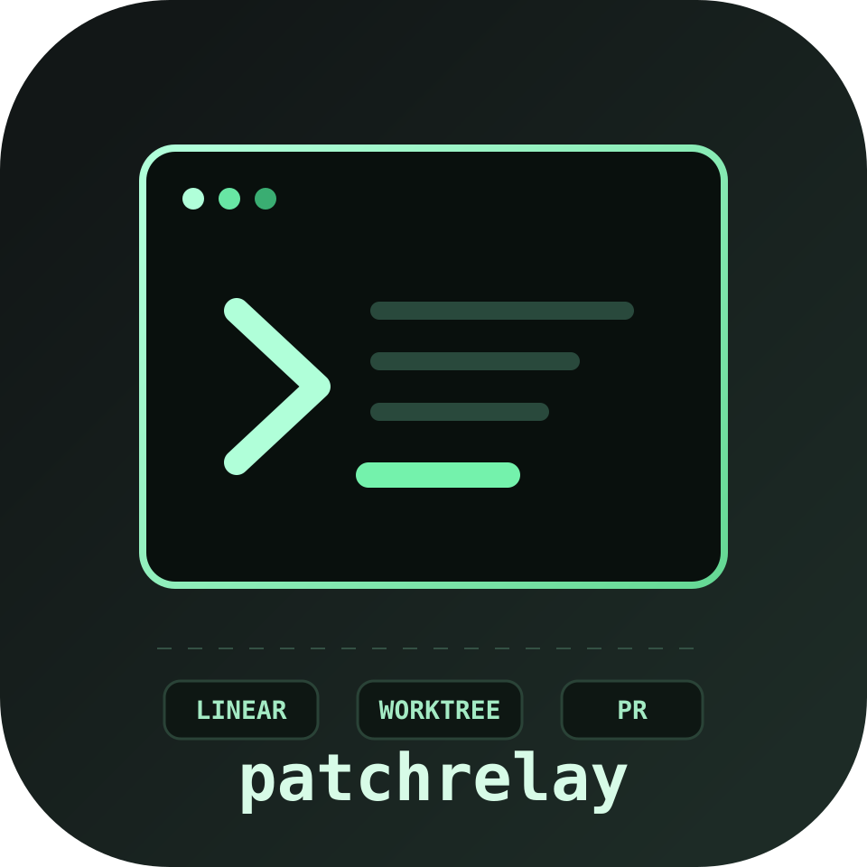
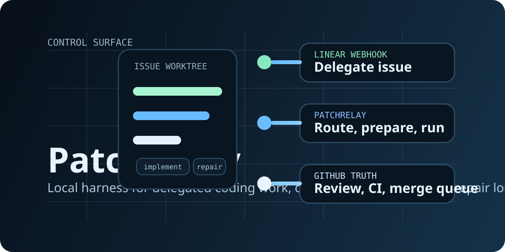
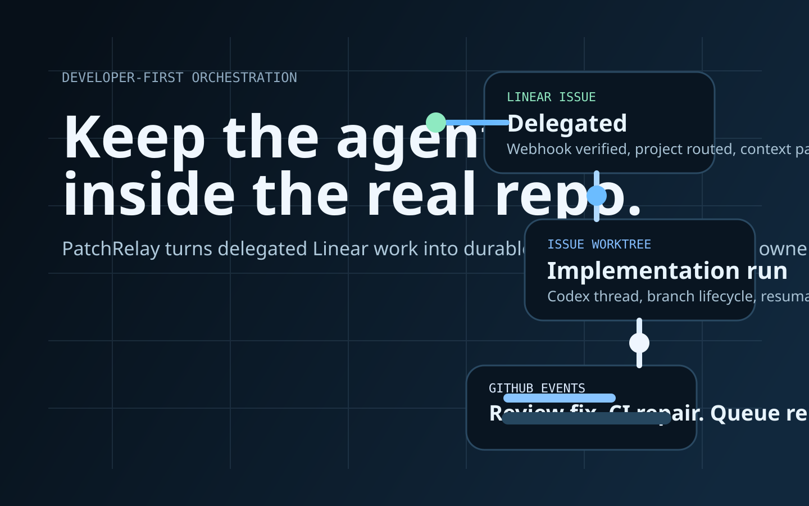
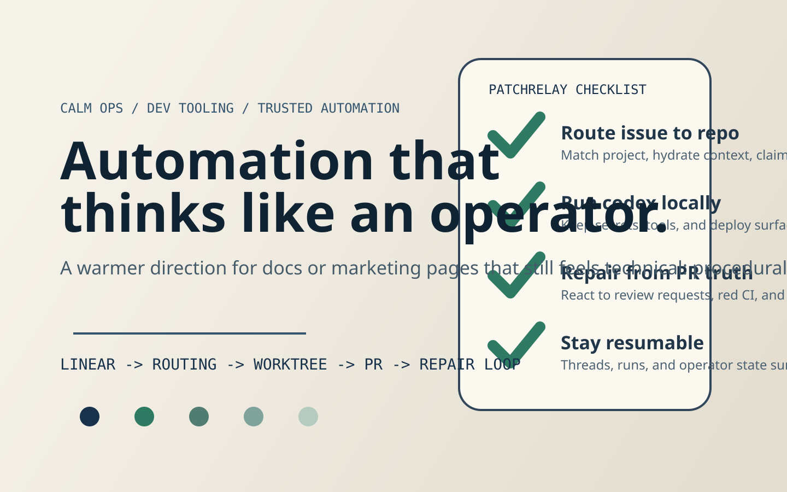

Modern orbit logo
Infra-forward primary logo with routed nodes and document/worktree cues.
Concepts built around local execution, issue worktrees, PR repair loops, and technical trust. Open this page in a browser to compare which visual language feels most like PatchRelay.
Infra-forward primary logo with routed nodes and document/worktree cues.

Monospace terminal direction that leans into operator tooling and command-line trust.

Blueprint-like OG image direction for the repository and project card surfaces.

Sharper, darker hero built from routing diagrams, queues, and reactive state flow.

Warmer operational aesthetic centered on explicit criteria and visible reliability.